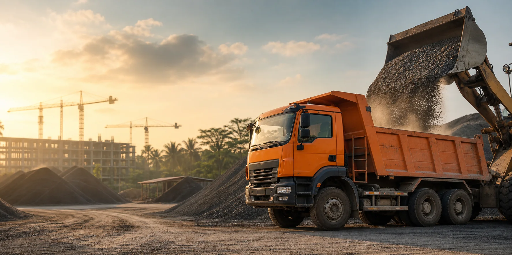

Tentang Perusahaan
Partner yang tumbuh bersama pembangunan.
Kami menghubungkan material berkualitas, armada yang siap, dan koordinasi yang disiplin agar setiap proyek dapat berjalan tanpa jeda.
01 — SIAPA KAMI
Dibangun dari pemahaman terhadap kebutuhan lapangan.
Mitra Pasir Beton adalah perusahaan supply material yang berfokus pada penyediaan pasir beton untuk pembangunan gedung, jalan, kawasan industri, dan berbagai infrastruktur. Kami hadir bukan sekadar membawa material ke lokasi, tetapi menjaga alur pekerjaan tetap bergerak.
Pengalaman melayani proyek dengan skala dan karakter berbeda membentuk cara kerja kami: memahami kebutuhan lebih dahulu, menyusun ritase secara realistis, menjaga konsistensi material, lalu berkomunikasi secara aktif dengan tim lapangan.
Dengan jaringan sumber material dan armada yang terkoordinasi, kami mampu melayani kebutuhan harian, supply bertahap, maupun kebutuhan berkelanjutan sesuai jadwal proyek.
12+Tahun pengalaman menangani kebutuhan material konstruksi
1.2KPengiriman material yang telah diselesaikan
45+Mitra kontraktor dan pengembang yang dilayani
98%Tingkat kepuasan berdasarkan evaluasi mitra
02 — PERJALANAN KAMI
Tumbuh selangkah demi selangkah, bersama kepercayaan klien.
01
Awal Perjalanan
Memulai operasional sebagai pemasok pasir beton untuk proyek perumahan dan bangunan komersial di wilayah Bogor.
02
Perluasan Armada
Menambah jaringan armada dan mitra sumber material untuk memperluas jangkauan pengiriman ke Jabodetabek.
03
Masuk ke Proyek Infrastruktur
Mulai dipercaya menangani supply bertahap untuk pekerjaan jalan, drainase, dan kawasan industri.
04
Sistem Operasional Terintegrasi
Menerapkan pencatatan ritase, penjadwalan, dan koordinasi pengiriman yang lebih terukur untuk mendukung proyek berskala besar.
03 — ARAH PERUSAHAAN
Visi yang jelas, misi yang dikerjakan setiap hari.
Menyediakan material berkualitas, pengiriman terukur, serta pelayanan responsif yang membantu proyek bekerja lebih efisien.
Akurat
Memastikan kebutuhan, volume, lokasi, dan jadwal dipahami dengan jelas sebelum pengiriman.
Responsif
Menjaga komunikasi aktif agar perubahan lapangan dapat ditangani tanpa memperlambat pekerjaan.
Berkelanjutan
Membangun hubungan jangka panjang melalui mutu layanan yang konsisten pada setiap proyek.
04 — NILAI INTI
Prinsip yang menjaga standar kerja kami.
Integritas
Jujur pada volume, kualitas, harga, dan kondisi pengiriman.
Kualitas
Menjaga material dan proses kerja sesuai standar kebutuhan.
Ketepatan
Menghargai waktu dan target pekerjaan setiap mitra.
Kemitraan
Bekerja sebagai bagian dari solusi, bukan sekadar vendor.
Bangun Bersama Kami
Butuh mitra supply yang memahami ritme proyek?
Ceritakan kebutuhan Anda. Tim kami siap membantu dari estimasi volume hingga jadwal pengiriman.
Hubungi Tim Kami →